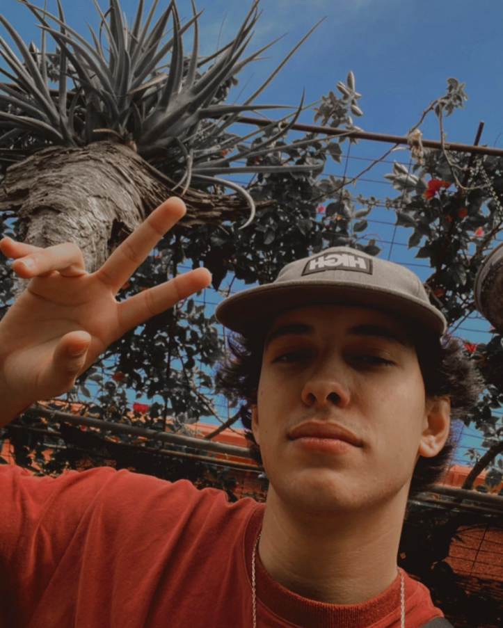

Portfólio do Pietro
HOME
SOBRE MIM

Me chamo Pietro Khader Vencato,
sou estudante de agrônomia
, sempre fui apaixonado por
tecnologia
, estou no momento
iniciando minha jornada na programação
e este será meu
portfólio de testes.
Acesse minhas redes:
INSTAGRAM
GITHUB
LINKEDIN
Areas de estudadas até o momento
- HTML
- CSS
-
-
-
-